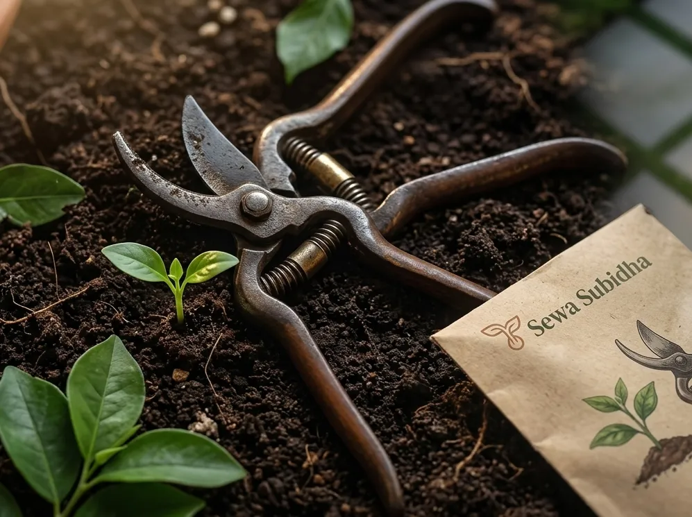

If you are looking for a gardening service in Kathmandu, the first step is not finding the flashiest website. It is clarifying what you actually need, what kind of property you have, and which provider can deliver work that suits the local conditions of your space.
1. Define what gardening work you actually need
Many people search for a gardening service in Kathmandu without being clear on the exact job. A small maintenance plan is not the same as a complete garden redesign, a rooftop planting project, or a landscaping refresh for a commercial property. A terrace garden with containers has very different needs from a front garden with shrubs and seasonal planting.
Before you contact anyone, write down the main problem you need solved:
- Do you need regular maintenance, pruning, and weeding?
- Do you want a garden design and installation project?
- Do you need irrigation, drainage, or soil improvement?
- Is the property a rooftop, terrace, apartment compound, office, or residential home?
- Are you looking for a low-maintenance garden or a more decorative planting scheme?
A clear brief does two important things. It helps you compare providers properly, and it helps the gardening company give you a realistic suggestion instead of a generic answer.
Are you looking for routine care, a design-led transformation, or a mix of both? The answer changes the type of provider you should contact.
2. Check whether the provider offers that specific service
Not every gardening company offers the same scope of work. Some focus on maintenance, some on planting and soft landscaping, and others on bigger design and construction projects. In Kathmandu, small urban spaces, rooftops, patios, and apartment compounds often need different planning than larger residential plots.
Ask providers directly:
- Do you handle routine garden maintenance?
- Do you work with rooftops, terraces, or small courtyard spaces?
- Can you plan irrigation or watering systems?
- Do you handle soil preparation and drainage-related improvements?
- Do you work on commercial sites, homes, or both?
A professional provider should explain the services they handle well and be honest about anything that requires a specialist. That transparency is more useful than broad claims like “we do everything.”
3. Look at genuine previous work
One of the best ways to assess a gardening service is by looking at real examples of the work. Ask for photos of completed projects, before-and-after images, and examples similar to your own property type. Garden design in Kathmandu often depends heavily on site constraints such as access, sunlight, space, and maintenance expectations.
When reviewing work, look for:
- healthy, well-maintained planting
- balanced layout rather than overcrowded planting
- evidence of practical drainage and irrigation planning
- design that suits the property rather than a generic style
A portfolio should show not just beautiful images but usable, maintainable spaces. A garden that looks good in a photo but cannot handle actual Kathmandu Valley conditions may not be the right fit.

4. Check experience relevant to your property type
A provider with experience in a large compound may not be the best fit for a compact apartment terrace. A terrace garden in Kathmandu may require container planning, water management, and careful access decisions, while a courtyard or office landscaping project might need stronger focus on durability, maintenance, and presentation.
Ask whether the provider has worked on properties like yours, and whether they understand the specific issues of your site:
- sunlight exposure
- drainage and soil quality
- water availability
- space limitations
- maintenance expectations
Good local experience matters because the right plant species, layout, and maintenance approach depend on the actual conditions of the property.
5. Ask who will actually perform the work
Sometimes the person selling the job is not the same person carrying out the physical work. That is why it is important to understand who will be on site, who will handle planting, and whether the same team will handle follow-up maintenance.
Useful questions include:
- Who will do the actual planting and preparation work?
- Will the same team handle aftercare?
- Is there a site supervisor or project lead?
- Who is responsible for plant sourcing and site setup?
A good provider should be able to explain the work process clearly. If the answer is vague or uncertain, that is a warning sign.
6. Check plant knowledge and maintenance practices
Gardening is not only about attractive plants. It is about choosing species that suit the property, the Kathmandu Valley environment, and the maintenance level the owner can realistically manage. A plant that looks stunning in a showroom may struggle in a space with limited sunlight, poor drainage, or irregular watering.
Ask questions about:
- which plants suit the amount of sunlight available
- whether the site has poor drainage or dry zones
- which plants need frequent attention and which are more resilient
- how the garden should be maintained across different seasons
A capable gardening service should explain plant choices with practical reasoning, not just aesthetic preference.
7. Ask about soil, drainage, irrigation, and sunlight
Before any design is finalised, the provider should assess the real conditions of the site. In Kathmandu and the surrounding valley, soil quality, sunlight, drainage, and water access can vary a great deal between properties.
Relevant questions include:
- How do you assess soil and drainage quality?
- Will irrigation or watering be required after installation?
- How do you plan around low-light or shaded areas?
- Will the garden be able to handle Kathmandu’s seasonal water and weather patterns?
Good gardeners plan with the site, not around a single image or concept. If a provider does not discuss actual site conditions, their recommendations may be generic rather than useful.
8. Compare quotations properly
A quote should be compared by scope, not only by price. A very low number can hide omitted work, weaker plant quality, or fewer services included. Compare quotations on the same basis.
Look for clarity on:
- design or consultation fees
- plant supply
- soil preparation
- irrigation or water setup
- labour and materials
- clean-up and follow-up work
If a provider cannot explain what is included and excluded, ask them to break the quote down more simply. A quote that reads clearly is usually a better sign than a quote that feels vague or overly promotional.
9. Understand recurring maintenance
A garden is not a one-time installation. It needs ongoing care, especially in urban settings where watering, pruning, and plant health need regular attention. Ask whether the provider offers periodic maintenance after installation and what it includes.
Good questions include:
- Do you offer maintenance visits after installation?
- What is included in your routine care package?
- How often should the garden be serviced?
- Do you handle seasonal pruning and plant replacement?
Understanding the maintenance requirement up front helps prevent a garden that looks impressive at the start but becomes difficult to sustain later.
10. Check communication and reliability
Reliable communication is one of the strongest signs of a trustworthy provider. A good gardener should respond clearly, answer questions without rushing, and explain their process in plain language.
Look for a provider who:
- answers questions directly
- gives realistic timelines
- explains work clearly
- keeps you informed during the project
Do not ignore your instincts. If communication feels unclear, rushed, or inconsistent from the start, it is usually a sign of how the project may go later on.
11. Check genuine customer reviews
Customer reviews can be useful if they are specific and realistic. Look for feedback that mentions actual project outcomes, communication, punctuality, and how the garden looked after the work was completed.
Be cautious with reviews that simply say “great work” or “excellent service” with no detail. More useful reviews describe the project, the process, and the level of follow-through after installation.
If you are comparing providers, ask whether they can share a client with a similar property type. That kind of reference is often more useful than a generic online review.
12. Confirm the service area
Service coverage matters. Some providers operate within Kathmandu, some cover Lalitpur and Bhaktapur, and others may be more limited by travel distance or site access. The service area can affect scheduling, visit frequency, and maintenance support.
Ask whether they serve your area and whether they are comfortable working in homes, offices, apartment compounds, rooftops, or terraces. A provider with solid local experience but a limited coverage area is not automatically a poor choice. It simply matters that they are able to serve your property consistently.
13. Ask about plant replacement and warranty policies if offered
Some providers offer replacement support or aftercare for a limited period. Others do not. It is worth asking how they handle plant replacement, especially in a new garden installation.
Useful questions include:
- What happens if a plant does not survive after planting?
- Is there a replacement policy?
- Does the support cover labour, plants, or both?
- What conditions are excluded?
Even when a provider does not offer a formal warranty, the answer to this question tells you how seriously they treat aftercare and project quality.
14. Get the important details in writing
Once a provider has explained the plan, ask for the details in writing. A good proposal should include the scope of work, timeline, included materials, maintenance plan, and any exclusions. That helps you compare providers fairly and avoids confusion later.
Important points to confirm in writing:
- scope of work
- materials and plant list
- timeline
- maintenance arrangements
- payment terms
- plant replacement or support policy
Clear documentation is not just about admin. It is part of good project management and a useful way to protect both sides.
"The right gardening service is not the one that sounds most impressive. It is the one that can explain the project clearly, work with your site, and plan for long-term care."
— Sewa Subidha GardeningGardening Service Selection Checklist
- I have defined what gardening work I truly need
- I know whether I need maintenance, planting, design, or landscaping
- I checked whether the provider offers that service
- I reviewed genuine examples of previous work
- I confirmed their experience matches my property type
- I asked who will do the work on site
- I discussed sunlight, drainage, soil, and irrigation
- I compared quotations by scope, not just price
- I understood what is included and excluded
- I asked about recurring maintenance
- I checked communication and reliability
- I reviewed customer feedback carefully
- I verified the service area
- I asked about plant replacement or warranty support
- I requested all key details in writing
Questions to Ask a Gardener Before Hiring
- What type of gardening or landscaping work do you handle most often?
- Have you worked on properties like mine, such as a terrace, rooftop, courtyard, or apartment garden?
- Can you show me recent examples of similar projects?
- Who will do the work on site?
- Which plants do you recommend for this location and why?
- How do you assess sunlight, drainage, and soil conditions?
- Is irrigation included or planned separately?
- What is included in the quote and what is excluded?
- What maintenance will the garden need after installation?
- What happens if a plant does not survive after planting?
Red Flags to Watch For
Some warning signs are easy to spot early. Be cautious if a provider:
- provides a vague quotation with no clear breakdown
- pressures you to pay immediately before the scope is clear
- cannot show relevant examples of work
- promises unrealistic results without discussing site realities
- refuses to explain materials or plant choices
- has poor communication during initial discussions
- has repetitive or generic-looking reviews with no context
None of these signs necessarily mean a provider is bad. But they are all reasons to slow down and ask more detailed questions.
Conclusion
Choosing a gardening service in Kathmandu is less about finding the slickest sales pitch and more about finding the provider who understands your property, your goals, and your maintenance reality. The best gardeners do not just design a space that looks attractive on day one. They plan for long-term health, sustainability, and ongoing care.
Before hiring, take time to assess the provider carefully. Look at their previous work, ask precise questions, compare quotes by scope, confirm the maintenance plan, and make sure the proposal matches the actual conditions of your site. That way, you are making a decision based on value, not just appearance.
Choose a gardening service that can explain the plan clearly, show real work, and be honest about the limits of the site. That is usually a better sign than a provider who promises the most without practical detail.
Looking for more practical advice? Read Best Gardening in Nepal, Best Organic Gardening in Nepal, Best Gardening Service in Nepal, or The Ultimate Guide to Gardening.